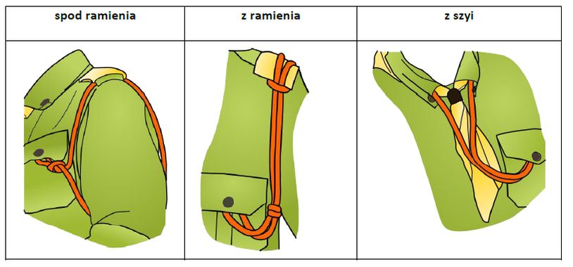

Ta strona ma pomóc w zrozumieniu całej rosłej struktury ZHP czyli nazwy funkcji, kolory sznurów, sposób plecenia sznura i beczki na sznurze.
Strona ta była tworzona aby zrealizować zadanie na sprawność SKAUT ***.
Poniższa infografika prezentuje wszystkie możliwe sposoby noszenia sznura funkcyjnego.
| Nazwa | Kolor | Sposób plecienia | Sposób noszenia | Beczki | Inne |
|---|---|---|---|---|---|
| Zastępowy | Brązowy | Pojedynczy | Spod ramienia | Brak beczek | |
| Podzastępowy | Szary | Pojedynczy | Spod ramienia | 1 Brązowa beczka | |
| Funkcyjny zastępu | Szary | Pojedynczy | Spod ramienia | 1 Brązowa beczka | |
| Przyboczny | Zielony | Pojedynczy | Spod ramienia | Brak beczek | |
| Drużynowy | Granatowy | Pojedynczy | Spod ramienia | Brak beczek | |
| Funkcyjny drużyny | Sznur pełnionej funkcji | Pojedynczy | Spod ramienia | Zielona beczka | |
| Przewodniczący kręgu instruktorskiego, seniorów i starszyzny | Biało-granatowy | Pojedynczy | Spod ramienia | Brak beczek | |
| Komendant szczepu | Granatowy | Poczwórnie pleciony | Z ramienia | Brak beczek | |
| Zastępca komendanta szczepu(ds. gospodarczych) | Granatowy | Pojedynczy | Z ramienia | Z dwoma węzłami lub dwiema granatowymi beczkami | |
| Funkcyjny szczepu | Sznur pełnionej funkcji | Pojedynczy | Spod ramienia | 1 Granatowa beczka | |
| Komendant związku drużyn | Granatowo-srebrny | Poczwórnie pleciony | Z ramienia | Brak beczek | |
| Zastępca komendanta związku drużyn | Granatowo-srebrny | Pojedynczy | Z ramienia | Z dwoma węzłami lub dwiema beczkami | |
| Funkcyjny związku drużyn | Sznur pełnionej funkcji | Pojedynczy | Z ramienia | Granatowo-srebrna beczka | |
| Komendant hufca Okupacyjnego |
Srebrny | Poczwórnie pleciony | Z ramienia | Brak beczek | |
| Zastępca komendanta hufca, skarbnik hufca | Srebrny | Pojedynczy | Z ramienia | Z dwoma węzłami lub z dwiema srebrnymi beczkami | |
| Członek komendy i instruktor komendy hufca mianowany rozkazem | Sznur pełnionej funkcji / Sznur srebrny | Pojedynczy | Spod ramienia | Z jedną srebrną beczką / Z jednym węzłem lub jedną srebrną beczką | |
| Przewodniczący komisji rewizyjnej hufca | Srebrny | Pojedynczy | Spod ramienia | Trzy białe beczki | |
| Wiceprzewodniczący komisji rewizyjnej hufca | Srebrny | Pojedynczy | Spod ramienia | Dwie białe beczki | |
| Członek sądu harcerskiego hufca | Sznur pełnionej funkcji podstawowej / Sznur srebrny | Pojedynczy | Spod ramienia | Jeden srebrny i jeden fioletowy / Jeden fioletowy | |
| Przewodniczący rady chorągwi | Sznur złoty | Pojedynczy | Noszony z szyi | Trzy beczki | |
| Zastępca przewodniczącego rady chorągwi | Sznur złoty | Pojedynczy | Noszony z szyi | Dwie beczki | |
| Członek rady chorągwi | Sznur pełnionej funkcji | Pojedynczy | Nie Podano | Jedna złota beczka | |
| Komendant chorągwi | Złoty | Poczwórnie pleciony | Noszony z ramienia | Brak beczek | |
| Zastepca komendanta chorągwi, skarbnik chorągwi | Złoty | Pojedynczy | Z ramienia | Z dwoma węzłami lub z dwiema złotymi beczkami | |
| Członek komendy i instruktor komendy chorągwi mianowany rozkazem | Sznur pełnionej funkcji / sznur złoty | Pojedynczy | Spod ramienia | Z jednym węzłem lub jednyą złotą beczką | |
| Przewodniczący komisji rewizyjnej chorągwi | Złoty | Pojedynczy | Spod ramienia | Z trzema białymi beczkami | |
| Wiceprzewodniczący komisji rewizyjnej chorągwi | Złoty | Pojedynczy | Spod ramienia | Z dwiema białymi beczkami | |
| Członek komisji rewizyjnej chorągwi | Sznur pełnionej funkcji / Sznur złoty | Pojedynczy | Spod ramienia | Jedna złota i jedna biała beczka / Jedna biała beczka | |
| Przewodniczący sądu harcerskiego chorągwi | Sznur złoty | Pojedynczy | Spod ramienia | Trzy fioletowe beczki | |
| Wiceprzewodniczący sądu harcerskiego chorągwi | Sznur złoty | Pojedynczy | Spod ramienia | Dwie fioletowe beczki | |
| Członek sądu harcerskiego chorągwi | Sznur pełnionej funkcji / Sznur złoty | Pojedynczy | Spod ramienia | Jedna złota i jedna fioletowa beczka / jedna fioletowa beczka | |
| Przewodniczący ZHP | Sznur skórzany | Pojedynczy | Z szyi | Z trzema beczkami | |
| Wiceprzewodniczący ZHP | Skórzany | Pojedynczy | Z szyi | Z dwiema beczkami | |
| Członek Rady Naczelnej | Sznur pełnionej funkcji podstawowej, a w przypadku mianowanego instruktora GK ZHP sznur skórzany | Pojedynczy | Spod ramienia | Jedna skórzana beczka / Dwie skórzane beczki | |
| Naczelnik ZHP | Sznur skórzany | Poczwórnie pleciony | Z ramienia | Brak beczek | |
| Zastępca naczelnika, skarbnik ZHP | Sznur skórzany | Pojedynczy | Z ramienia | Z dwoma węzłami lub z dwiema skórzanymi beczkami | |
| Członek GK lub instruktor GK mianowany rozkazem | Sznur pełnionej funkcji podstawowej / Skórzany | Pojedynczy | Spod ramienia | Jedna skórzana i jedna biała beczka / jedna biała beczka | |
| Przewodniczący Centralnej Komisji Rewizyjnej | Sznur skórzany | Pojedynczy | Spod ramienia | Z trzema białymi beczkami | |
| Wiceprzewodniczący Centralnej Komisji Rewizyjnej | Sznur skórzany | Pojedynczy | Spod ramienia | Z dwiema białymi beczkami | |
| Członek Centralnej Komisji Rewizyjnej | Sznur pełnionej funkcji / skórzany | Pojedynczy | Spod ramienia | Z jedną skórzaną i jedną białą beczką / Z jedną białą beczką | |
| Przewodniczący Naczelnego Sądu Harcerskiego | Sznur skórzany | Pojedynczy | Spod ramienia | Z trzema fioletowymi beczkami | |
| Wiceprzewodniczący Naczelnego Sądu Harcerskiego | Sznur skórzany | Pojedynczy | Spod ramienia | Z dwiema fioletowymi beczkami | |
| Członek Naczlenego Sądu Harcerskiego | Sznur pełnionej funkcji / skórzany | Pojedynczy | Spod ramienia | Jedna skórzana i jedna fioletowa beczka / Jedna fioletowa beczka | |
| Kapelan ZHP | Sznur fioletowy | Pojedynczy | Spod ramienia | Beczka odpowiednia dla funkcyjnego danej jednostki |